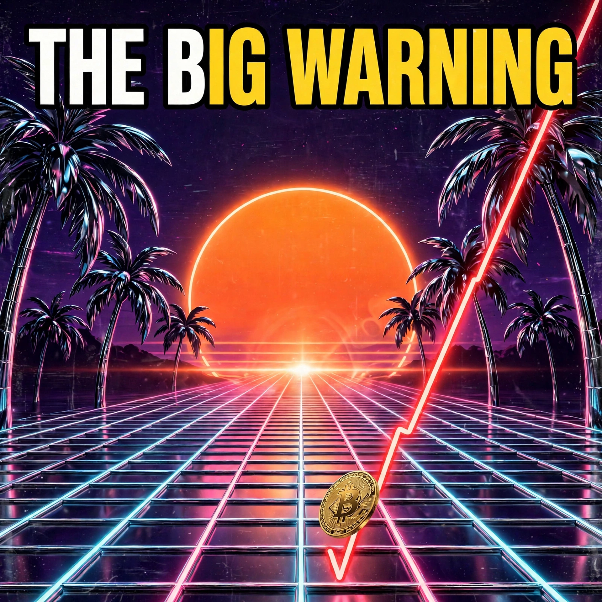
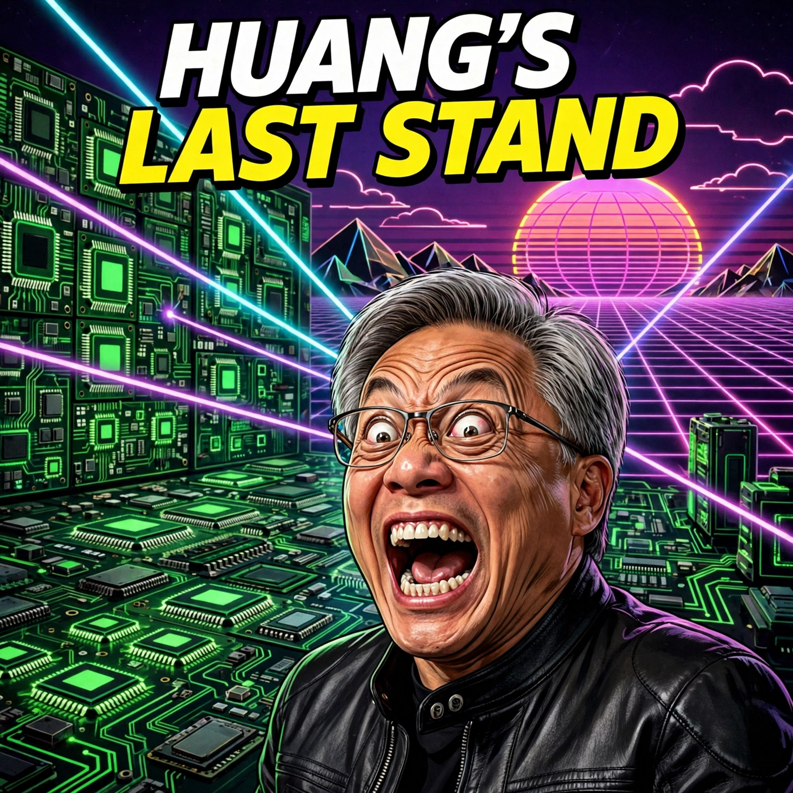
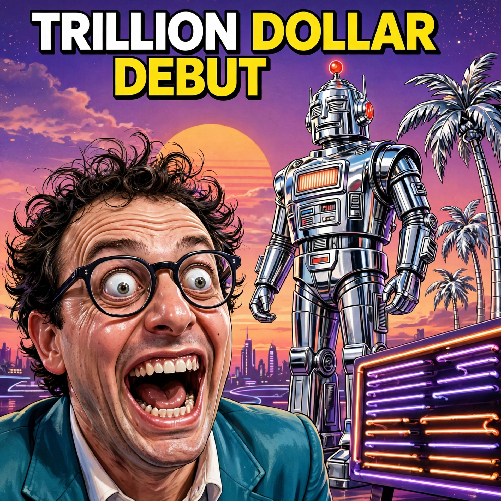

Bitcoin Stories — Tuesday, Nov 17, 2026

Bitcoin could fall into the $50,000s after breaking below its 200-week average near $68,000, leading crypto market maker Wintermute warned. With flows negative and the 200-week lost, pressure points first to Saturday's $62,000 low, then the $60,000 Deribit put cluster holding over $900 million in open interest.
Read the full story →Bitcoin's MVRV ratio has fallen to around 1.1, mirroring the undervaluation levels seen around the 2022 market bottom before a significant recovery, according to CryptoQuant. It is the third time the signal has appeared during the 2026 bear market, with the average short-term holder cost basis near $75,600.
Read the full story →
Nvidia reports fiscal Q3 earnings after the bell today, its first since CEO Jensen Huang resigned on Nov. 11. Wall Street expects about $109 billion in revenue, up 91% year over year, with options implying a roughly 7% share move either way.
Read the full story →
Anthropic is set to price its IPO on Wednesday and begin trading Thursday on Nasdaq under the ticker ANT, selling 825 million shares at $70 to $78 to raise as much as $64 billion. The listing would value the AI company at roughly $1.4 trillion, with revenue of $33.2 billion in the first nine months of 2026.
Read the full story →Binance founder CZ said he has bought the dip over the past few days after receiving stablecoins, and denied rumours that Binance sold crypto assets during the selloff. Bitcoin briefly fell to $62,006 over the weekend, its lowest since July, before recovering toward $65,000.
Read the full story →